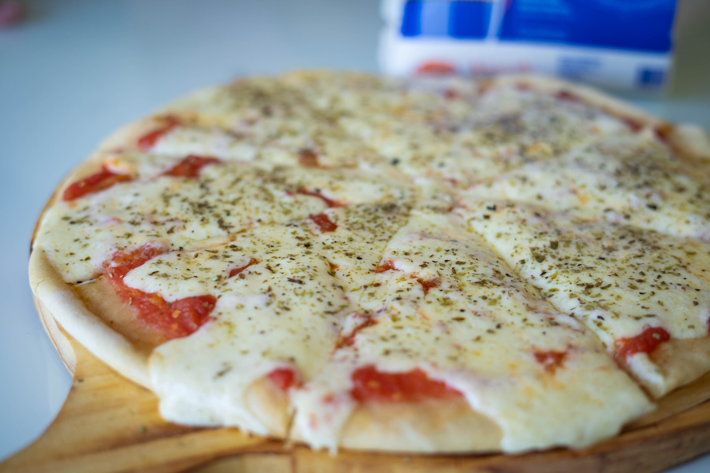
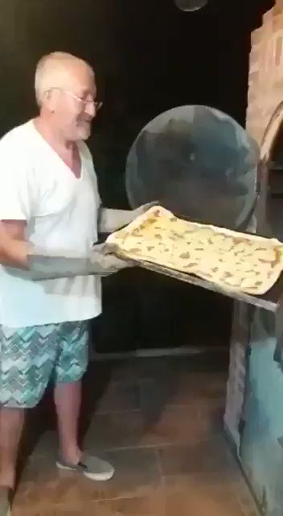

Pizza

Si, pizza, la comida favorita de las Tortugas Ninja.
- 1/2 kilo de harina 000
- 25 gr de pan de levadura fresco
- 1/2 cucharada de sal
- 4 cucharadas de aceite de oliva
- 1 cucharadaa de azúcar
- 1 taza de agua tibia
Ingredientes:
- Primero, en una taza, vas tirando toda la levadura, media taza de agua tibia y agregar una cucharada de azucar, asì hasta mezclar todo y que se hagan burbujas, lo tapas con algo y esperas unos minutos, 10 a 15
- Luego en otro bol vas colcando la harina, la mezclas con sal, haces un hueco en el centro, no lo hagás con el codo no seas bestia! en fin, volcas la taza de agua con la levadura, agarras todo con las manos hasta que se forme una masa
- Toca esperar 15 minutos y luego amasas todo como un campeon, tenelo todo en la mesa, hace bollos, mandale con todo ahi
- Estira la masa, tratá de formar un circulo, pones todo en una fuente y esperas que leve unos 15 min
- Ponelo en un horno, esperate unos minutos no se, 5 quizas? no te mandés ninguna que sinó queda todo re crudesco
- Nada, tirale salsa de tomate ahi, una cucharada y ponela en el horno otra vez, unos 3 minutitos
- Listo, ahora dedicate a disfrutar con semejante pizza que te armaste campeón
Bueno rey, como lo preparamos?:

La cara de un tipo que está disfrutando de sostener la Pizza